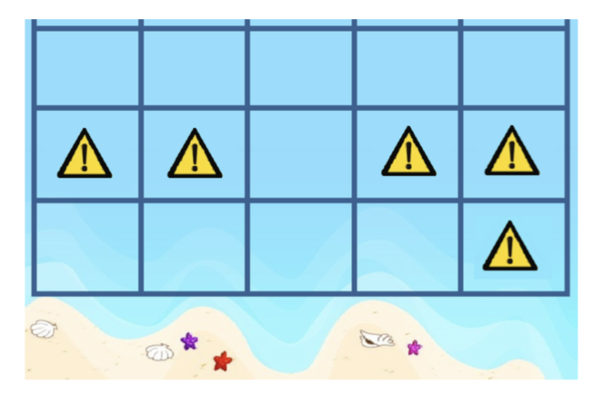

久莲是个爱玩的女孩子。
暑假终于到了，久莲决定请她的朋友们来游泳，她打算先在她家的私人海滩外圈一块长方形的海域作为游泳场。然而大海里有着各种各样的危险，有些地方水太深，有些地方有带毒的水母出没。她想让圈出来的这一块海域都是安全的。
经过初步的分析，她把这块海域抽象成了一个底边长为N米，高为1001米的长方形网格。其中网格的底边对应着她家的私人海滩，每一个1×1的小正方形都代表着一个单位海域。她拜托了她爸爸明天去测量每一个小正方形是否安全。在得知了信息之后，她要做的就是圈出她想要的游泳场啦。
她心目中理想的游泳场满足如下三个条件：
- 必须保证安全性。即游泳场中的每一个单位海域都是安全的。
- 必须是矩形。即游泳场必须是整个网格中的一个a×b的子网格。
- 必须和海滩相邻。即游泳场的下边界必须紧贴网格的下边界。
例如：当N= 5时，若测量的结果如下（因为1001太大，这儿只画出网格最下面三行的信息，其他部分都是危险的）。

那么她可以选取最下面一行的1×4的子海域，也可以选择第三列的3×1的子海域。注意她不能选取最上面一行的1×5的子海域，因为它没有与海滩相邻。
为了让朋友们玩的开心，她想让游泳场的面积尽可能的大。因此她会选取最下面那一行的1×4的子海域作为最终方案。
虽然她要明天才能知道每一个单位海域是否安全，但是她现在就想行动起来估计一下她的游泳场面积有多大。经过简单的估计，她假设每一个单位海域都有独立的$q$的概率是安全的，$1−q$的概率是不安全的。她想要知道她能选择的最大的游泳场的面积恰好为K的概率是多少。
然而久莲对数学并不感兴趣，因此她想让你来帮她计算一下这个数值。
 Comet OJ
Comet OJ